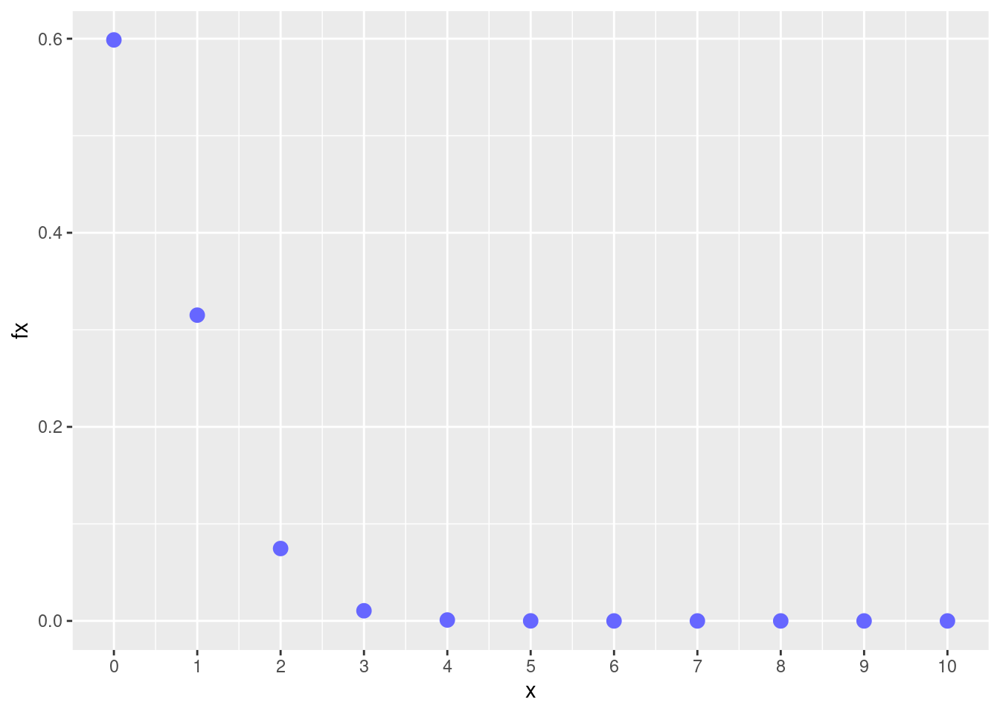
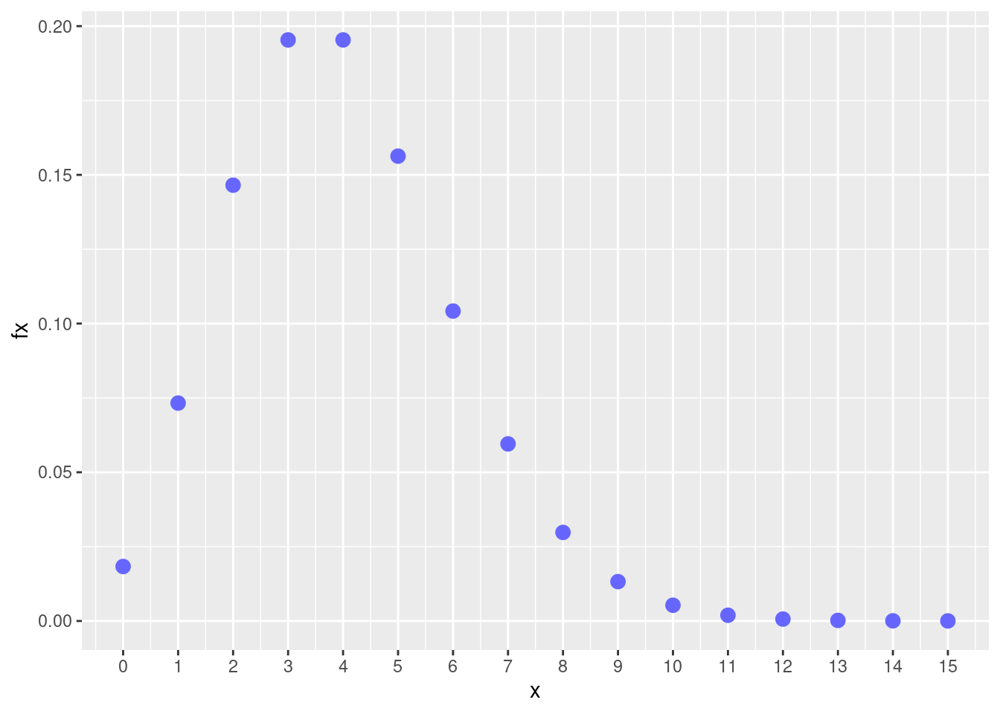
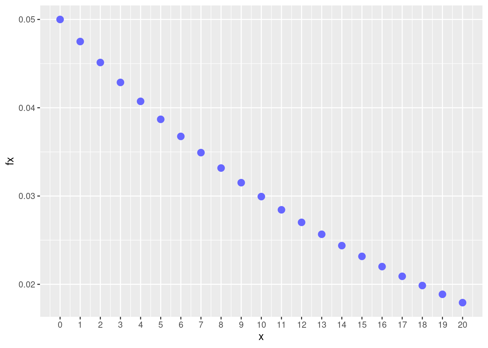
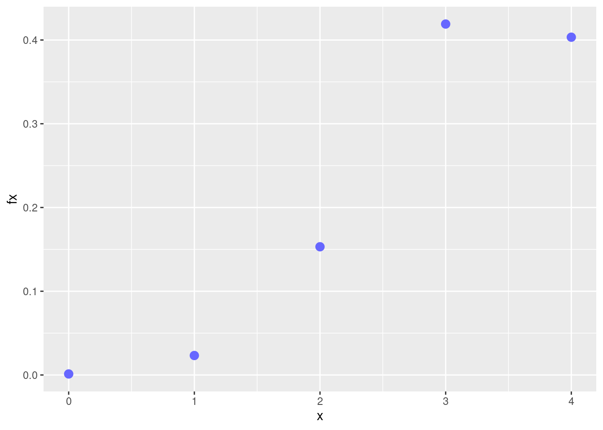
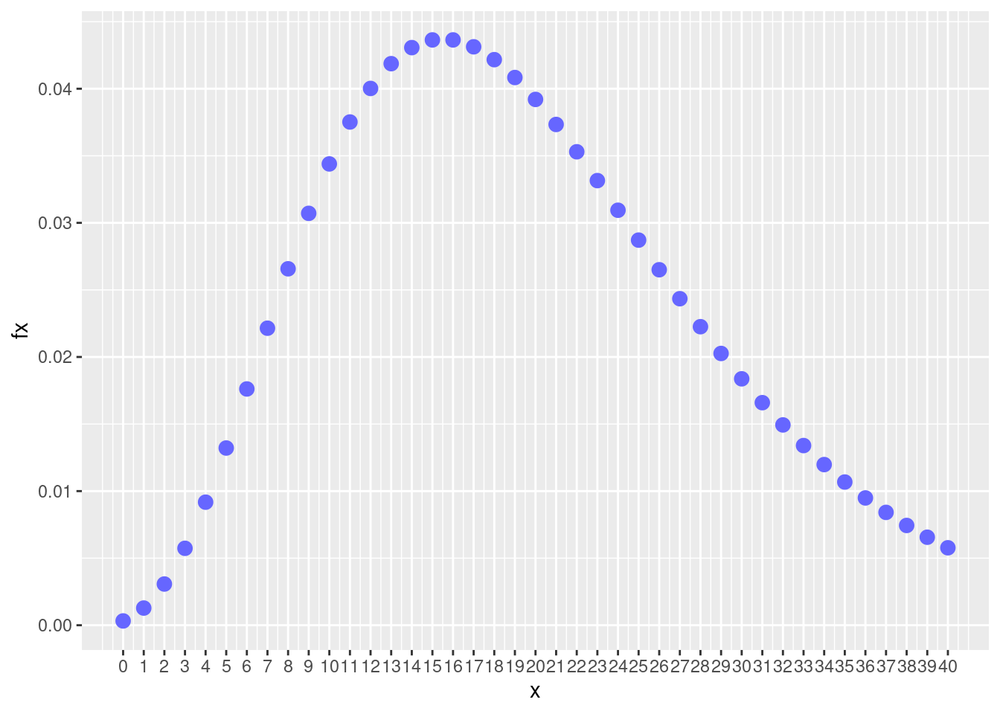

dbinom(5,10,0.5)[1] 0.2460938pbinom(2,10,0.05)[1] 0.9884964dbinom(3,10,0.05)+dbinom(4,10,0.05)[1] 0.01143987pbinom(4,10,0.05)-pbinom(2,10,0.05)[1] 0.01143987pbinom(7,10,0.05, lower.tail = FALSE)[1] 1.605078e-091-pbinom(7,10,0.05)[1] 1.605078e-09library(ggplot2)
x=0:10
fx=dbinom(x,10,0.05)
dat=data.frame(x,fx)
ggplot(dat) + geom_point(aes(x, fx),colour = c2, size = 3) +
scale_x_continuous(limits = c(0, 10),
breaks = 0:10)
# Distribución Poisson
# X : número de eventos que ocurren por unidad de tiempo, longitud, superficie o volumen
# f(x) dpois(x, lambda)
# F(x) =P(X<=x) ppois(q, lambda, lower.tail = TRUE)
# Percentil qpois(p, lambda, lower.tail = TRUE)
# aleatorio rpois(n, lambda)
dpois(0,4)[1] 0.01831564dpois(4,4)[1] 0.1953668ppois(1,4,lower.tail = FALSE)[1] 0.9084218ppois(2,4)[1] 0.2381033library(ggplot2)
x=0:15
fx=dpois(x,4)
dat=data.frame(x,fx)
ggplot(dat) + geom_point(aes(x, fx),colour = c2, size = 3) +
scale_x_continuous(limits = c(0, 15),
breaks = 0:15)
dgeom(1,0.05)[1] 0.0475pgeom(2,0.05)[1] 0.142625dgeom(8,0.05)[1] 0.033171021-pgeom(1,0.05)[1] 0.9025library(ggplot2)
x=0:20
fx=dgeom(x,0.05)
dat=data.frame(x,fx)
ggplot(dat) + geom_point(aes(x, fx),colour = c2, size = 3) +
scale_x_continuous(limits = c(0, 20),
breaks = 0:20) 
# dhyper(x, m, n, k, log = FALSE)
# dhyper(x, N-K, K, (n), log = FALSE)
dhyper(1,80,20,4)[1] 0.02325804dhyper(3,80,20,4)[1] 0.41905271-phyper(0,80,20,4)[1] 0.99876441-dhyper(0,80,20,4)[1] 0.9987644phyper(0,80,20,4, lower.tail = FALSE)[1] 0.9987644dhyper(4,80,20,4)[1] 0.4033382library(ggplot2)
x=0:4
fx=dhyper(x,80,20,4)
dat=data.frame(x,fx)
ggplot(dat) + geom_point(aes(x, fx),colour = c2, size = 3) +
scale_x_continuous(limits = c(0, 4),
breaks = 0:4) 
Nota: En este caso se debe realizar una conversión de los parámetros para utiliar la función dhyper de R m = K, número de éxitos en la urna N = m + n , total de elementos en la urna K = n, tamaño de la muestra a extraer de la urna
Para este caso : m=20, n=80, k=4
\(P(X = 0)\)
\(P(X = 6)\)
\(P(X \geq 10)\)
\(P(X \leq 12)\)
E[X] y V[X]
Construya la gráfica de \(f_{_{X}}(x)\)
library(ggplot2)
x=0:40
fx=dnbinom(x,5,20/100)
dat=data.frame(x,fx)
ggplot(dat) + geom_point(aes(x, fx),colour = c2, size = 3) +
scale_x_continuous(limits = c(0, 40),
breaks = 0:40) 
# X: numero de llantas con imperfecciones
dbinom(0,4,0.05)[1] 0.8145062dbinom(1,4,0.05)[1] 0.1714751-dbinom(0,4,0.05)[1] 0.1854938pbinom(0,4,0.05, lower.tail = FALSE) [1] 0.1854938dpois(5,8)[1] 0.09160366ppois(3,8)[1] 0.04238011dpois(2,8*2)[1] 1.44045e-058*2.5[1] 20pbinom(15,20,0.90)[1] 0.0431745 dgeom(15,0.03)[1] 0.018997541-dbinom(0,75,0.01)[1] 0.5294134pbinom(0,75,0.01,lower.tail = FALSE)[1] 0.5294134pgeom(9,0.01, lower.tail = FALSE)[1] 0.9043821pgeom(10,0.01)[1] 0.1046617pbinom(100,105,0.90, lower.tail = FALSE)[1] 0.01671632dpois(8,1*5)[1] 0.06527804dpois(0,1)[1] 0.3678794ppois(1,1)[1] 0.7357589\(X \sim binom\) cuando procede de un experimento binomial
El experimento consta de \(n\) ensayos
Cada ensayo tiene solo dos posible resultados: éxito (E) o fracaso (F) (experimento Bernoulli),
La probabilidad de éxito es igual a \(p\) y se mantiene fija para todos los ensayos P(E). La probabilidad de fracaso es \((1-p)=q\),
Los ensayos son independientes,
La variable objeto de estudio \(X\), corresponde al número de éxitos obtenidos en los \(n\) ensayos.
Se puede decir que la suma de \(n\) variables independientes con distribución Bernoulli(\(p\)), se distribuye de manera Bionomial(\(n,p\))
\(X \sim poiss\), cuando representa el número de eventos que ocurren en un espacio de tiempo, distancia, area, volumen
\(X \sim geom\), cuando representa el número del ensayo donde ocurre el primer exito (En R representa el número de fracasos)
\(X \sim hyper\), cuando representa el número de exitos que se pueden obtener al extraer una muestra de tamaño \(n\), de una urna que contiene \(N\) objetos de los cuales \(K\) corresponden a exitos.
\(X \sim nbinom\), cuando representa el número del ensayo donde ocurre el \(r\)-simo ensayo (En R representa el número de fracasos para encontrar r éxitos)
| modelo | \(F(x)\) | \(X_{p}\) | \(f(x)\) | aleatorio |
|---|---|---|---|---|
| binomial | pbinom | qbinom | dbinom | rbinom |
| gometrico | pgeom | qgeom | dgeom | rgeom |
| hipergeometrico | phyper | qhyper | dhyper | rhyper |
| Poisson | ppois | qpois | dpois | rpois |
| binomial negativo | pnbinom | qnbinom | dnbionom | rnbinom |